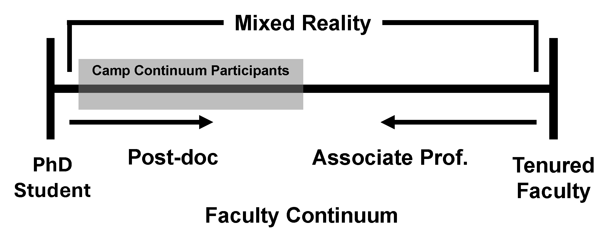

About the camp
Camp Continuum is a three-night, two-day retreat for very early-career faculty, postdocs, and senior PhD students working in Extended Reality (XR) research. The camp focuses on early-stage collaborative ideation and sustained intellectual exchange rather than presentation of completed work.
It is modeled after community-building initiatives such as the IEEE Visualization Summer Camp, adapted for the XR research context. The 2026 edition is the inaugural cohort and will run at a smaller scale to refine the format before scaling in future years.
The camp uses a two-year cohort model. Participants are not required to attend both years, but are strongly encouraged to, in order to support career-long bond formation.
Who should attend

The camp is aimed at academia-aspiring senior PhD students, postdocs, and early-career faculty working in XR-related fields, including computer graphics, human-computer interaction, perception science, and systems engineering. Priority is given to researchers who publish in IEEE VR, IEEE ISMAR, and IEEE TVCG.
Goals
- Help participants identify two or three new, fundable research directions through structured collaborative ideation.
- Facilitate cross-disciplinary research proposals centered on a shared core of XR research.
- Identify co-authorship and collaborative research opportunities across institutions.
- Establish a sustained peer cohort for mutual support in peer review, grant strategy, and career navigation that persists beyond the camp itself.
| Camper | Round 1 | Round 2 | Round 3 | Round 4 | Round 5 | Round 6 | Round 7 | Round 8 | Round 9 | Round 10 | Round 11 | Round 12 | Round 13 | Round 14 | Round 15 |
|---|---|---|---|---|---|---|---|---|---|---|---|---|---|---|---|
| 1 | stairs | balcony | big couch | grill | kitchen table | chess | laundry | kitchen island | stairs | kitchen island | chess | grill | laundry | kitchen table | balcony |
| 2 | big couch | kitchen table | balcony | kitchen island | stairs | balcony | grill | kitchen table | stairs | chess | grill | laundry | chess | kitchen island | laundry |
| 3 | laundry | balcony | chess | laundry | kitchen island | grill | stairs | balcony | big couch | chess | kitchen table | stairs | kitchen table | big couch | grill |
| 4 | chess | laundry | balcony | kitchen table | big couch | kitchen island | kitchen table | laundry | grill | kitchen island | kitchen table | big couch | stairs | balcony | chess |
| 5 | balcony | kitchen island | big couch | laundry | chess | kitchen table | kitchen island | grill | kitchen table | laundry | grill | big couch | balcony | chess | stairs |
| 6 | kitchen table | grill | kitchen table | kitchen island | big couch | laundry | balcony | big couch | chess | stairs | chess | stairs | balcony | laundry | big couch |
| 7 | kitchen island | chess | stairs | grill | kitchen island | kitchen table | big couch | chess | balcony | grill | big couch | laundry | stairs | laundry | kitchen table |
| 8 | grill | big couch | kitchen island | balcony | stairs | kitchen island | balcony | stairs | laundry | big couch | balcony | grill | kitchen table | chess | kitchen table |
| 9 | grill | stairs | laundry | big couch | kitchen table | grill | kitchen island | chess | kitchen island | kitchen table | stairs | balcony | chess | balcony | big couch |
| 10 | kitchen island | stairs | grill | chess | grill | balcony | kitchen table | big couch | laundry | balcony | kitchen island | chess | laundry | big couch | stairs |
| 11 | kitchen table | big couch | grill | stairs | laundry | chess | stairs | grill | balcony | kitchen table | laundry | kitchen island | grill | kitchen island | chess |
| 12 | balcony | chess | laundry | stairs | balcony | stairs | grill | laundry | chess | big couch | kitchen island | kitchen table | kitchen island | kitchen table | grill |
| 13 | chess | grill | kitchen island | chess | balcony | big couch | laundry | balcony | kitchen table | grill | stairs | kitchen island | big couch | stairs | laundry |
| 14 | laundry | kitchen island | stairs | big couch | laundry | big couch | chess | kitchen table | grill | stairs | balcony | chess | kitchen island | grill | balcony |
| 15 | big couch | laundry | kitchen table | balcony | grill | stairs | chess | kitchen island | big couch | laundry | big couch | balcony | grill | stairs | kitchen island |
| 16 | stairs | kitchen table | chess | kitchen table | chess | laundry | big couch | stairs | kitchen island | balcony | laundry | kitchen table | big couch | grill | kitchen island |
Schedule
| Day 1 (Arrival) | |
| 3:00 PM | Arrival and check-in |
| 4:30 PM | Grocery run for meals and snacks |
| 6:30 PM | Dinner |
| Day 2 (Presentations and Speed Ideation) | |
| 8:30 AM – 9:30 AM | Breakfast |
| 9:30 AM – 12:30 PM | Introductory presentations, group Q&A, and speed ideation session (rotating 1:1 conversations) |
| 12:30 PM – 2:00 PM | Lunch |
| 2:00 PM – 5:00 PM | Afternoon programming: early-career faculty discussion, peer exchange on publishing, lab management, time management, and tenure expectations, followed by an invited senior-faculty talk or panel |
| 5:00 PM – 5:15 PM | Break |
| 5:15 PM – 6:00 PM | Unconference agenda preparation |
| 6:30 PM – 8:00 PM | Dinner and games |
| Day 3 (Unconference) | |
| 8:30 AM – 9:30 AM | Breakfast and morning reflections |
| 9:30 AM – 11:00 AM | Unconference Session 1 |
| 11:00 AM – 12:30 PM | Unconference Session 2 |
| 12:30 PM – 2:00 PM | Lunch |
| 2:00 PM – 3:30 PM | Unconference Session 3 |
| 3:30 PM – 5:00 PM | Unconference Session 4 |
| 5:00 PM – 6:00 PM | Feedback and discussion for future iterations |
| 6:00 PM – 6:30 PM | What happens next and collaboration roll call |
| 6:30 PM – 8:00 PM | Dinner and group activity (hiking, exploring the city, etc.) |
| Day 4 (Departure) | |
| 8:00 AM – 9:15 AM | Breakfast |
| 9:15 AM – 9:45 AM | Personal packing |
| 9:45 AM – 10:30 AM | Accommodation cleaning |
| 10:30 AM – 10:50 AM | Closing statements and lightning round |
| 11:00 AM | Departure |
Apply
Applications are now closed.
Organizers
Cassidy R. Nelson
Assistant Professor, University of Utah
Co-founder of the XR Future Faculty Forum (F3). Studies user-centered design and evaluation of XR and serious games in high-risk contexts such as emergency response, education, and mental healthcare.
Niall L. Williams
Assistant Professor, Barnard College, Columbia University
Co-founder of F3. Studies computational methods to improve perceptual experience in immersive displays, and uses XR to probe the capabilities and limitations of human vision.
Matt Gottsacker
PhD Candidate, University of Central Florida
Co-founder of F3. Studies 3D user interfaces, with a focus on transitions between distinct real or virtual environments and their cognitive effects.